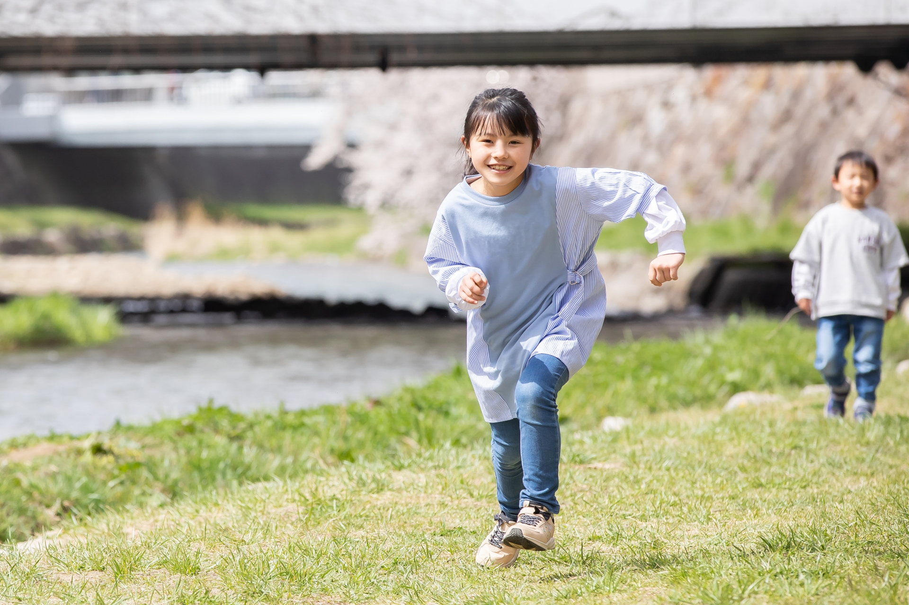
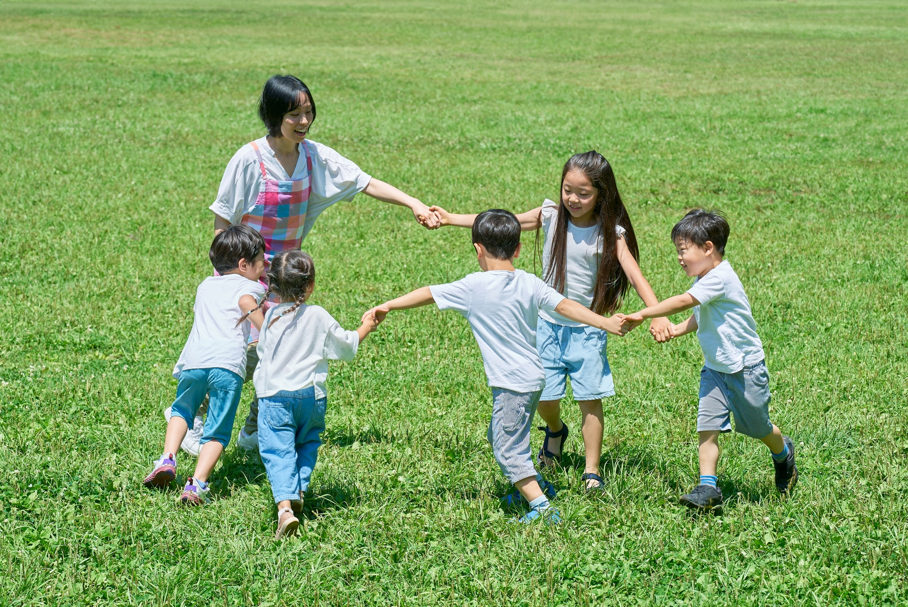
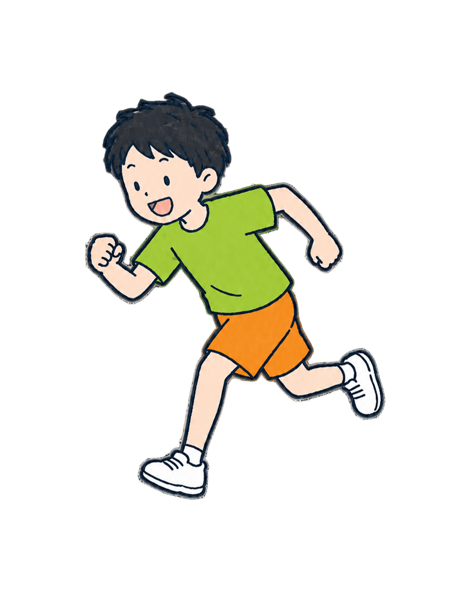
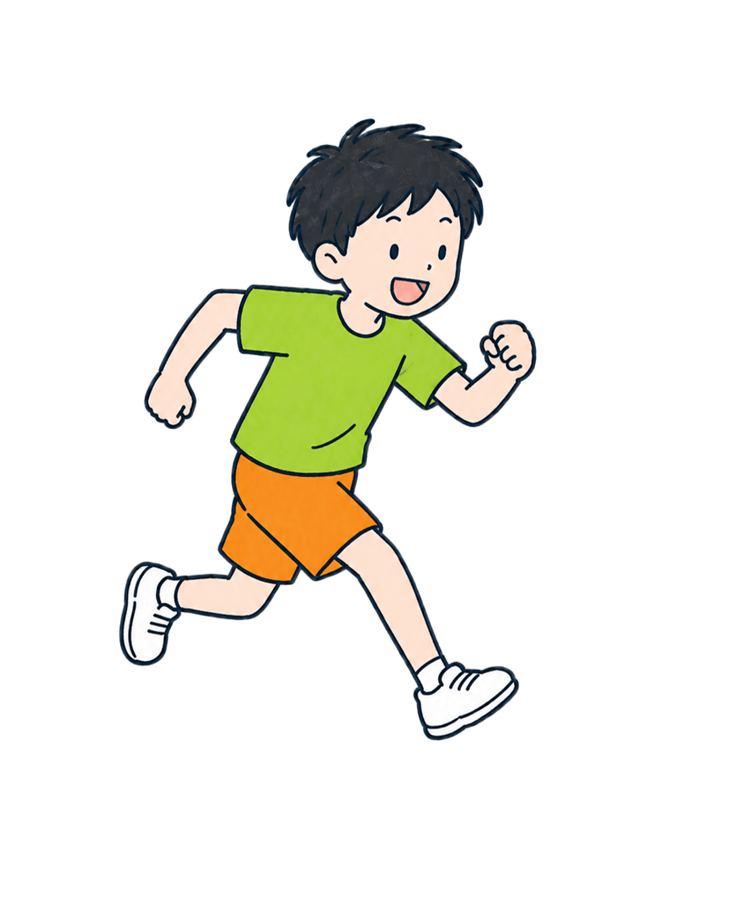
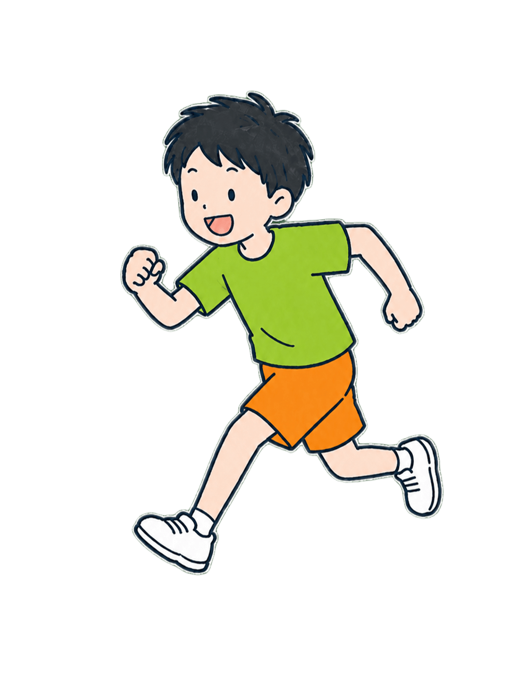
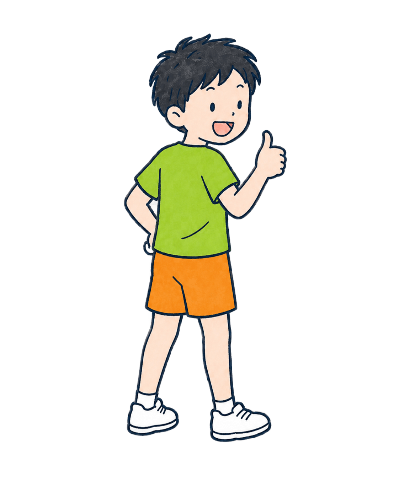

01 MOVE FREELY
体を動かすことを、
好きになる。
走る、跳ぶ、くぐる、投げる。遊びのなかでさまざまな動きに触れながら、自分の体を思いどおりに使う感覚を育てます。
うまくできることよりも、まずは「動くって楽しい」と感じること。その気持ちが、次の挑戦への原動力になります。
PRIVATE PREVIEW
制作確認用の簡易ログインです。
FOR PARENTS / OUTDOOR PLAY & MOVEMENT
お子さまが自分のペースで遊び、挑戦し、 「やってみたい」を育てていく時間をつくります。 保護者の方にも、安心して見守っていただける活動です。
WHAT WE VALUE
運動が得意な子も、少し苦手意識がある子も。一人ひとりが安心して参加し、自分なりの楽しさを見つけられるように活動します。
01 MOVE FREELY
走る、跳ぶ、くぐる、投げる。遊びのなかでさまざまな動きに触れながら、自分の体を思いどおりに使う感覚を育てます。
うまくできることよりも、まずは「動くって楽しい」と感じること。その気持ちが、次の挑戦への原動力になります。

02 TRY AGAIN
少し高いところに登ってみる。もう一度走ってみる。遊びのなかで生まれる「やってみたい」を、急かさず受け止めます。
失敗しても大丈夫と思える安心感があるからこそ、子どもたちは自分のペースで新しい一歩を踏み出せます。

03 GROW TOGETHER
順番を待つ、応援する、できたことを一緒に喜ぶ。ひとりでは味わえない経験が、友だちとの関わり方や相手を思う気持ちにつながります。
講師も一緒に遊び、見守りながら、子どもたちの小さな変化を丁寧に受け止めます。
ACTIVITY
公園や広場という開かれた場所で、その日の子どもたちの様子や季節に合わせて活動を組み立てます。決まった正解を教えるだけではなく、遊びの中にある発見や挑戦を一緒に広げていきます。
WARM UP
鬼ごっこや簡単なゲームで、楽しく体を動かす準備をします。初めての場所や初めての友だちがいる日でも、遊びを通して自然に輪に入れるように進めます。
その日の表情や緊張の具合を見ながら、無理なく始められる時間をつくります。
OUTDOOR PLAY
走る、跳ぶ、登る、バランスを取るなど、屋外ならではの動きを遊びの中で経験します。決められた形をこなすだけでなく、子どもたちの発想も取り入れます。
季節や場所に合わせて内容を変えながら、外で体を動かす楽しさを広げます。
CHALLENGE
「もう一回やってみたい」「少しだけ試してみたい」という気持ちを大切にします。できる・できないだけで判断せず、挑戦した過程にも目を向けます。
一人ひとりのペースに合わせて声をかけ、小さな成功体験を積み重ねていきます。
SHARE
活動の終わりには、楽しかったことや頑張ったことを言葉にします。次に挑戦したいことも一緒に見つけ、子ども自身が成長を感じられるようにします。
保護者の方にもその日の様子を伝え、家庭でも前向きに声をかけられる材料を共有します。
INSTRUCTOR
子どもたちが安心して自分らしくいられること。そのうえで、少しだけ背中を押し、新しい挑戦を一緒に楽しむことを大切にしています。
活動中は、できたことだけでなく、迷っていたこと、頑張っていたこと、友だちに見せたやさしさにも目を向けます。保護者の方にもその日の様子を丁寧にお伝えし、成長を一緒に見守ります。
FOR PARENTS
初めて参加される保護者の方にも、活動の様子や準備するものが分かりやすく伝わるようにしています。
初めてでも、大丈夫です。

HOW IT WORKS
気になることやお子さまの様子を、まずは気軽にお聞かせください。
01
年齢、普段の様子、気になることを教えてください。

02
活動内容や場所など、参加前に知りたいことをご案内します。

03
お子さまのペースを大切にしながら、思いきり体を動かします。

04
その日の挑戦や成長を、保護者の方へお伝えします。

FAQ
気になることを、先に解消します。
もちろんです。得意・不得意で分けるのではなく、一人ひとりが楽しめることや挑戦できることを見つけながら進めます。
年長から中学1年生までを対象にしています。お子さまの様子や目的に合わせて、活動についてご案内します。
動きやすい服装、飲み物、帽子などを基本に、活動内容や季節に合わせて事前にご案内します。
天候による開催可否や対応については、事前に分かりやすくお知らせします。まずはお問い合わせ時にご確認ください。
ほかにも気になることがあれば、気軽にお聞かせください。
LET'S TALK
相談内容が決まっていなくても大丈夫です。お子さまのこと、気になっていることを、まずは聞かせてください。
メールアドレスだけで送れます。※ フォーム内容・送信先は公開時に設定します。